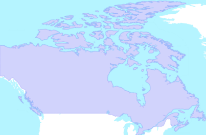

| Métadonnées | |
|---|---|
| Titre abrégé | ACB |
| Description | Area code boundaries is a graphic representation of Canadian telephone area codes. In the Canadian telephone system, an area code is a three-digit code delineating a “toll” and is distributed according to the North American Number Plan (NANP). This product is positioned to provide the foundation for most enterprise decision support systems or customer facing location services. The benefits are to enhance and Develop enterprise applications based on detailed DMTI Spatial datasets, reduce operating costs through increased efficiency from using real street data, minimize travel time with optimized routes and schedules, improve delivery processes and increase customer satisfaction. |
| Sujets |
|
| Auteur | Géoboutique Québec - Ministère de l'Énergie et des Ressources naturelles |
| Données géospatiales | |
| Type de représentation spatiale | vectorielle |
| Nombre d'objets géometriques | EPSG:4269 |
| Identifiant du système de référence | 20 (surface) |
| Légende | |
| Échelles (dénominateur) | 50000 |
| Étendue temporelle | de 2001 à 2012 |
| Boîte géographique |  |
| Contact | |
| Cartothèque de l'Université de Montréal Tél. 514 343-8038 Fax 514 343-8008 520, chemin de la Côte-Ste-Catherine, Université de Montréal MontréalQuébecH2V 2B8 Canada carto@umontreal.ca |
|